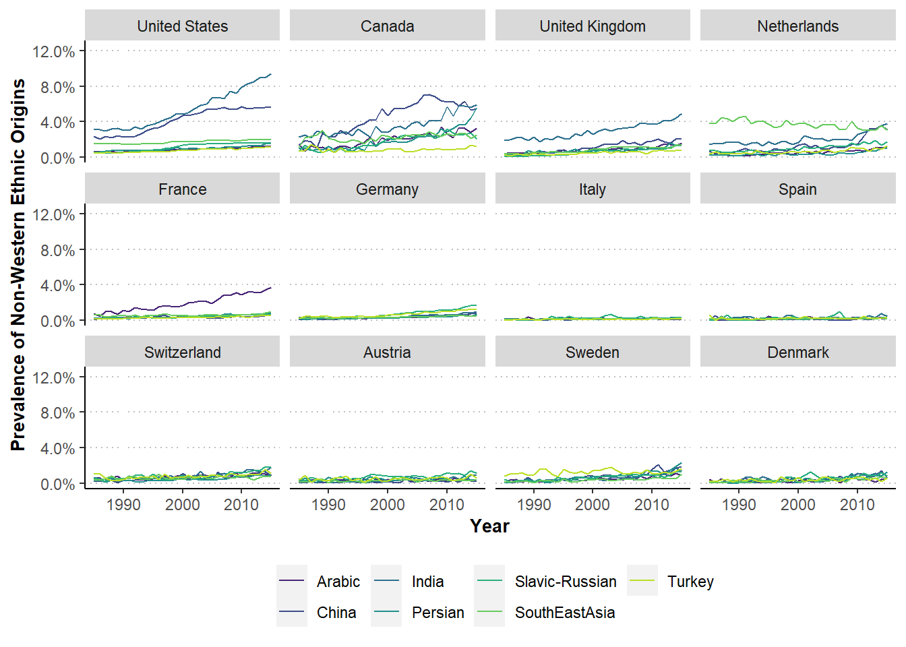
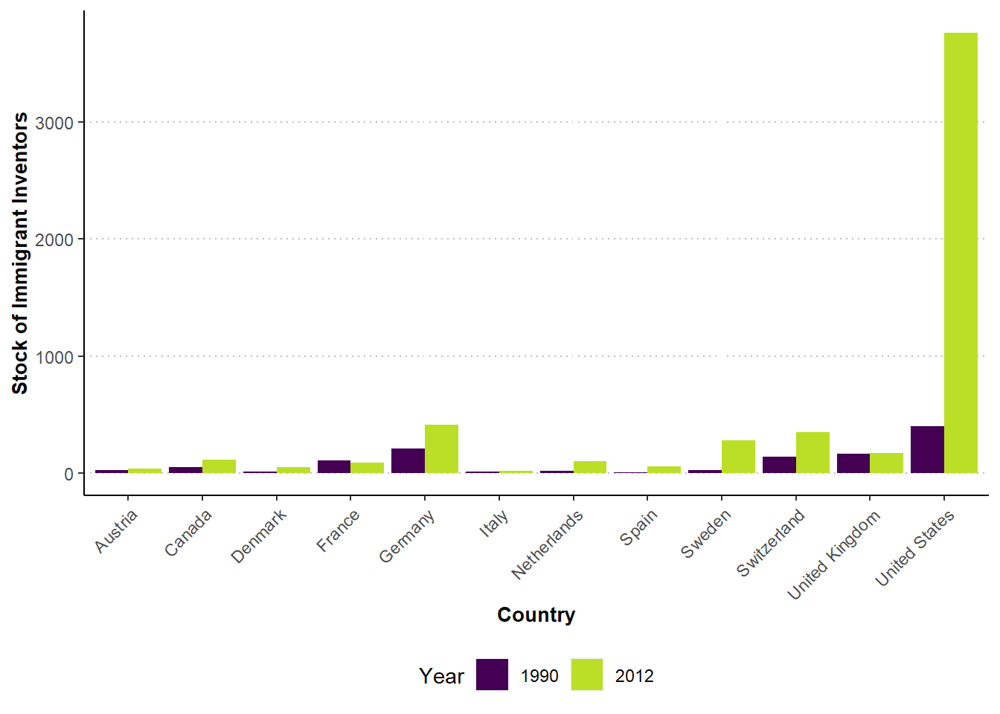

Mind The Gap: Non-Western Origin Inventors in the USA and Europe
December 2021 by Matthias Niggli and Christian Rutzer
 Ellis Island, United States in 1910 | The New York Public Library
Ellis Island, United States in 1910 | The New York Public Library
Inventors with non-western ethnic backgrounds have tremendously increased in the USA and contribute significantly to its inventive capacity. This is lacking in continental European countries that have been lagging behind in the global race for talents.
Since 2010, around half of the Nobel Prizes in Physics, Chemistry and Medicine were awarded to researchers working at U.S. institutions. At the same time, around 40% of these prize winners were not born in the USA. This highlights that the USA also had important help from abroad to obtain its remarkable position. The country benefits substantially from a Brain Gain of foreign talents who often immigrated already as students or aspiring young researchers (see e.g. Ganguli and Piacentini, 2013; Mervis, 2008 or Levin and Stephan, 1999).
This brain gain for the USA is not restricted to academia. It can also be observed when looking at the ethnic composition of patent inventors. Traditionally, patenting in the USA was strongly dominated by inventors of Anglo-Saxon and—although to a (much) smaller extent—continental European ethnic origins. In recent decades, this has no longer been the case to the same extent. Especially the share of inventors with Chinese, Indian and other non-western ethnic backgrounds has strongly increased since the 1990s. Today, a substantial fraction of U.S.-based inventors is not of the dominant Anglo-Saxon origin anymore (Kerr, 2008).
Did this trend also emerge in other high-income countries, for example in Western Europe? We can investigate this question using a deep learning algorithm that classifies patent inventors’ ethnic origins based on their names (we are happy to provide methodological details to interested readers upon request). This allows us to examine the ethnic composition of inventors beyond the USA and for a long period of time. Figure 1 plots the prevalence of inventors with different ethnic origins for 12 high-income countries.
Figure 1: The Prevalence of Non-Western Ethnic Inventors Is Low in Continental Europe
Prevalence of Non-Western Ethnic Origins Across Countries  Sources and notes: Own estimations of the CIEB using data on inventors stated on patents at the USPTO or EPO. The raw data is obtained from the USPTO and the OECD.The processed data shown in the plot is available on Github.
In continental Europe, the prevalence of non-western origin inventors is on a much lower level compared to the USA
The main take-away from this graph is a remarkable difference between North American and European countries, with the United Kingdom and the Netherlands somewhere in between. Similar to the USA, Canada has also witnessed a stark increase of the prevalence of non-western inventors (although the absolute numbers are on a much smaller level). But most continental European countries look rather different. For example, France has experienced a significant increase of Arabic inventors, but all other non-western ethnic groups remained on low levels. In Germany, the prevalence of inventors with Turkish or Slavic-Russian origins has somewhat increased but remains rather low. Similarly, slight increases for some non-western ethnic groups can be found in Switzerland, Sweden, Austria and Denmark. However, in all these continental European countries, the prevalence of non-western origin inventors is on a much lower level compared to the USA. The contrast is even more pronounced in southern European countries like Italy and Spain.
Another interesting finding is that non-western ethnic inventors in the USA can be found predominantly in emerging high-technology fields, such as “Information & Communication Technology” (ICT). This is illustrated in Figure 2 that shows the combined prevalence of all the considered ethnic origins across technological fields for the same countries as before.
Figure 2: The USA Has the Highest Non-Western Prevalence in Emerging Technology Fields
Combined Prevalence of Non-Western Ethnic Origins Across Technologies
Sources and notes: Own estimations of the CIEB using data on inventors stated on patents at the USPTO or EPO. The raw data is obtained from the USPTO and the OECD. The processed data shown in the plot is available on Github.
The vast increase of non-western inventors in the USA has been strongly directed towards emerging high-technology fields
The USA has a clearly higher ethnic diversity in almost all fields compared to European countries. But there is substantial heterogeneity across technologies within the USA. Besides ICT, non-western inventors are much more prevalent in technology fields such as “Computer Technology” or “Semiconductors” compared to more traditional fields such as “Transport” or “Machines”. This pattern cannot be observed for European countries, where the prevalence is similar and rather low most technology fields. Hence, there are two main points our analysis highlights: First, the bulk of migrating non-western inventors has gone to the USA and not to continental European countries. Second, the inflow of non-western inventors in the USA has been strongly directed towards emerging high-technology fields.
The natural question arising from this is whether European policymakers should be concerned about these differences. There is no final answer, but researchers have found evidence that immigration and diversity can foster innovative activity and growth through several channels. First of all, companies consider the access to highly skilled talents when deciding on locations for their research and development activities ( Lewin, Massini and Peeters, 2009) and more diverse inventor teams seem to directly enhance inventive output of firms (see Ferucci and Lissoni, 2019 or Parrotta, Pozzoli and Pytlikova, 2014). More generally, there is a large literature demonstrating that immigration also spurs innovation at the country-level (see e.g., Akcigit, Grigsby and Nicholas, 2017 or Burchardi, Chaney, Hassan, Tarquinio and Terry, 2020 for the USA and Cristelli and Lissoni, 2020 or Fassio, Montobbio, and Venturini, 2019 for Switzerland and European countries). Hence, there is extensive evidence that immigration can contribute to a country’s innovation capabilities. The USA’s extraordinary attractiveness for inventors from all around the world could thus be an important asset that is lacking in European countries. This should be a concern for European policymakers.
But why do we observe these differences between North America and Europe? One could argue that they simply reflect that the USA has always been an immigrant and ethnically diverse country. Its higher prevalence of non-western inventors could then simply reflect this fact. Although this surely plays a role, it can be shown easily that migration was a still a very important factor. Using data from the World Intellectual Property Organization WIPO, Figure 3 highlights that the stock and growth of inventor immigrants has been much higher in the USA compared to all other countries. Accordingly, there must be other factors than solely historical patterns that explain differences between continental European countries, Canada and the USA.
Figure 3: The USA Attracts a Large Number of Immigrant Inventors
Stocks of Immigrant Inventors Across Countries  Sources and notes: Own estimations of the CIEB using data from the World Intellectual Property Organization WIPO. The processed data shown in the plot is available on Github.
Some channels that all contribute to the differences are the English language as a lingua franca (e.g. Chiswick, 2005), the access to and attractiveness of universities (e.g. Kato and Sparber, 2013), tax incentives ( Akcigit, Baslandze and Stantcheva, 2016), and, last but not least, immigration policies (e.g. Kerr, 2020). Some of these channels, such as the language, can obviously not be influenced by policymakers. However, the access to universities for foreign students as well as immigration regulations are within their reach and could be adapted to attract more foreign talents.
The European Union’s Blue Card has been an attempt with this regard. But according to a OECD report from 2016, the results have been rather mixed. However, it is encouraging that the European Parliament has recently passed a reform of the EU Blue Card in order “to facilitate the employment of highly qualified non-EU nationals and help alleviate labour shortages in key sectors”. It remains to be hoped that the adopted rules achieve this ambitious goal and contribute to strengthen European countries’ innovative frameworks.
This article was written using R Markdown, R shiny and Plotly.js. Computations to generate the data were performed at sciCORE scientific computing center at the University of Basel.